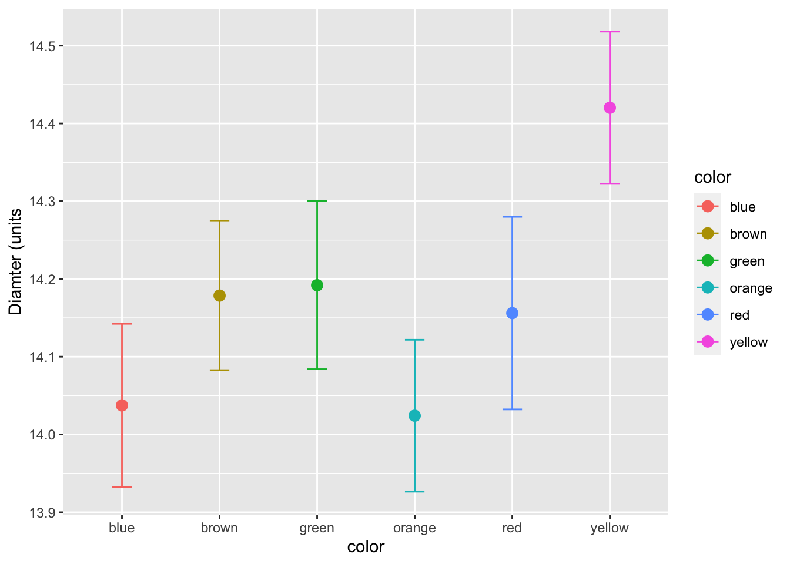
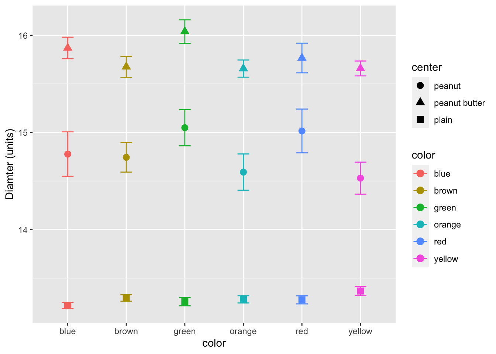

# install.packages("devtools")
# devtools::install_github("thomasp85/patchwork")
# load the libraries each time you restart R
library("readxl") # read in excel files
library("tidyverse") # dplyr and piping and ggplot etc
library("lubridate") # dates and times
library("scales") # scales on ggplot ases
library("skimr") # quick summary stats
library("janitor") # clean up excel imports
library("patchwork") # multipanel graphs
library(skimr) # great way to do summary stats##Read files
# lets read in a new file to add some complexity for fun
mm.df <- read_csv("data/mms.csv")##
## ── Column specification ────────────────────────────────────────────────────────
## cols(
## center = col_character(),
## color = col_character(),
## diameter = col_double(),
## mass = col_double()
## )Lets look at a few ways to get summary statistics The first is the simplist and uses base R
summary(mm.df)## center color diameter mass
## Length:816 Length:816 Min. :11.23 Min. :0.72
## Class :character Class :character 1st Qu.:13.22 1st Qu.:0.86
## Mode :character Mode :character Median :13.60 Median :0.92
## Mean :14.17 Mean :1.42
## 3rd Qu.:15.30 3rd Qu.:1.93
## Max. :17.88 Max. :3.62A better way is using Skimr
mm.df %>%
skim()| Name | Piped data |
| Number of rows | 816 |
| Number of columns | 4 |
| _______________________ | |
| Column type frequency: | |
| character | 2 |
| numeric | 2 |
| ________________________ | |
| Group variables | None |
Variable type: character
| skim_variable | n_missing | complete_rate | min | max | empty | n_unique | whitespace |
|---|---|---|---|---|---|---|---|
| center | 0 | 1 | 5 | 13 | 0 | 3 | 0 |
| color | 0 | 1 | 3 | 6 | 0 | 6 | 0 |
Variable type: numeric
| skim_variable | n_missing | complete_rate | mean | sd | p0 | p25 | p50 | p75 | p100 | hist |
|---|---|---|---|---|---|---|---|---|---|---|
| diameter | 0 | 1 | 14.17 | 1.22 | 11.23 | 13.22 | 13.60 | 15.30 | 17.88 | ▁▇▂▃▁ |
| mass | 0 | 1 | 1.42 | 0.71 | 0.72 | 0.86 | 0.92 | 1.93 | 3.62 | ▇▂▂▂▁ |
The cool part of skimr is that you can do groups
mm.df %>%
group_by(center) %>%
skim()| Name | Piped data |
| Number of rows | 816 |
| Number of columns | 4 |
| _______________________ | |
| Column type frequency: | |
| character | 1 |
| numeric | 2 |
| ________________________ | |
| Group variables | center |
Variable type: character
| skim_variable | center | n_missing | complete_rate | min | max | empty | n_unique | whitespace |
|---|---|---|---|---|---|---|---|---|
| color | peanut | 0 | 1 | 3 | 6 | 0 | 6 | 0 |
| color | peanut butter | 0 | 1 | 3 | 6 | 0 | 6 | 0 |
| color | plain | 0 | 1 | 3 | 6 | 0 | 6 | 0 |
Variable type: numeric
| skim_variable | center | n_missing | complete_rate | mean | sd | p0 | p25 | p50 | p75 | p100 | hist |
|---|---|---|---|---|---|---|---|---|---|---|---|
| diameter | peanut | 0 | 1 | 14.77 | 0.98 | 12.45 | 14.13 | 14.69 | 15.47 | 17.88 | ▂▇▇▃▁ |
| diameter | peanut butter | 0 | 1 | 15.77 | 0.63 | 13.91 | 15.32 | 15.72 | 16.19 | 17.61 | ▁▅▇▃▁ |
| diameter | plain | 0 | 1 | 13.28 | 0.34 | 11.23 | 13.08 | 13.28 | 13.48 | 14.38 | ▁▁▃▇▁ |
| mass | peanut | 0 | 1 | 2.60 | 0.34 | 1.93 | 2.36 | 2.58 | 2.81 | 3.62 | ▃▇▆▃▁ |
| mass | peanut butter | 0 | 1 | 1.80 | 0.27 | 1.19 | 1.62 | 1.77 | 1.94 | 2.63 | ▂▇▇▂▁ |
| mass | plain | 0 | 1 | 0.86 | 0.05 | 0.72 | 0.83 | 0.87 | 0.89 | 1.01 | ▁▃▇▃▁ |
Finally you can get a summary a differnt way but is a bit longer
mm.df %>%
group_by(center, color) %>%
summarize(mean_diamter = mean(diameter, na.rm=TRUE),
mean_mass = mean(mass, na.rm=TRUE))## `summarise()` has grouped output by 'center'. You can override using the `.groups` argument.## # A tibble: 18 x 4
## # Groups: center [3]
## center color mean_diamter mean_mass
## <chr> <chr> <dbl> <dbl>
## 1 peanut blue 14.8 2.58
## 2 peanut brown 14.7 2.57
## 3 peanut green 15.0 2.68
## 4 peanut orange 14.6 2.57
## 5 peanut red 15.0 2.63
## 6 peanut yellow 14.5 2.57
## 7 peanut butter blue 15.9 1.85
## 8 peanut butter brown 15.7 1.80
## 9 peanut butter green 16.0 1.92
## 10 peanut butter orange 15.7 1.73
## 11 peanut butter red 15.8 1.74
## 12 peanut butter yellow 15.7 1.74
## 13 plain blue 13.2 0.860
## 14 plain brown 13.3 0.871
## 15 plain green 13.3 0.870
## 16 plain orange 13.3 0.865
## 17 plain red 13.3 0.854
## 18 plain yellow 13.4 0.865These are all well and good but looking at a graph is cool.
# now for the plot
ggplot(mm.df, aes(color, diameter, color=color)) +
stat_summary(fun = mean, na.rm = TRUE,
geom = "point",
size = 3) +
stat_summary(fun.data = mean_se, na.rm = TRUE,
geom = "errorbar",
width = 0.2) +
labs(x = "color", y = "Diamter (units") 
We can also add in shape as a grouping varaible for the center of the m&m’s
# now for the plot
ggplot(mm.df, aes(color, diameter, group=center, shape=center, color=color)) +
stat_summary(fun = mean, na.rm = TRUE,
geom = "point",
size = 3) +
stat_summary(fun.data = mean_se, na.rm = TRUE,
geom = "errorbar",
width = 0.2) +
labs(x = "color", y = "Diamter (units)") 